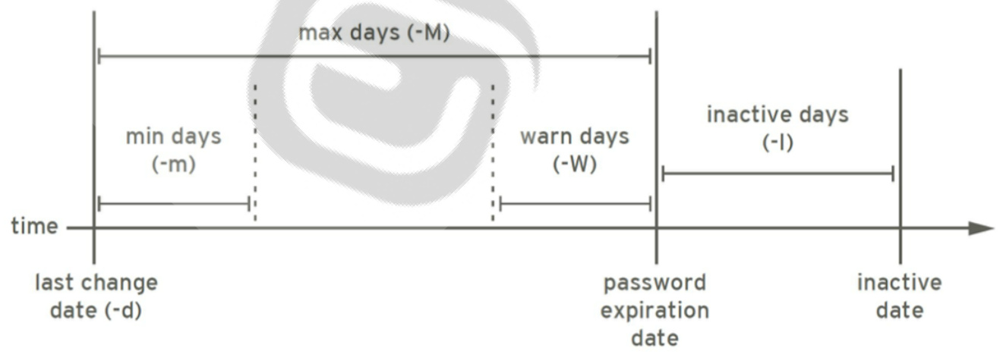
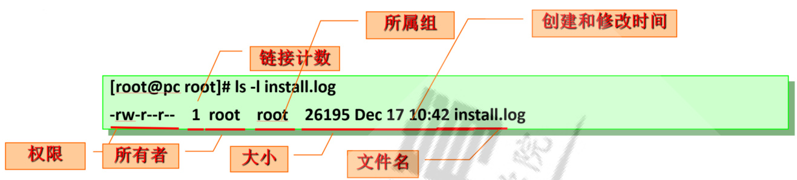

用户、组和权限¶
讲师：王晓春
用户、组和权限¶
内容概述¶
1 Linux安全模型¶
1.1 用户
1.2 用户组
1.3 用户和组的关系
1.3 安全上下文
2 用户和组的配置文件¶
2.1 用户和组的主要配置文件
2.2 passwd文件格式
2.3 shadow文件格式
2.4 group文件格式
2.5 gshdow文件格式
2.6 文件操作
3 用户和组管理命令¶
3.1 用户创建
3.2 用户属性修改
3.3 删除用户
3.4 查看用户相关的ID信息
3.5 切换用户或以其他用户身份执行命令
3.6 设置密码
3.7 修改用户密码策略
3.8 用户相关的其它命令
3.9 创建组
3.10 修改组
3.11 组删除
3.12 更改组密码
3.13 临时切换主组
3.14 更改和查看组成员
3.15 练习
4 文件权限管理¶
4.1 文件所有者和属组属性操作¶
4.1.1 设置文件的所有者chown4.1.2 设置文件的属组信息chgrp4.2 文件权限4.2.1 文件权限说明
4.2.2 修改文件权限chmod
4.3 新建文件和目录的默认权限
4.4 Linux文件系统上的特殊权限4.4.1 特殊权限SUID4.4.2 特殊权限SGID4.4.3 特殊权限 Sticky 位4.4.4 特殊权限数字法
4.5 设定文件特殊属性
4.6 访问控制列表 ACL4.6.1 ACL权限功能4.6.2 ACL相关命令4.6.3 备份和还原ACL
用户、组和权限¶
内容概述¶
Linux的安全模型
用户和组相关文件
用户和组管理命令
理解并设置文件权限
默认权限
特殊权限
文件访问控制列表
1 Linux安全模型¶
资源分派：¶
Authentication：认证，验证用户身份Authorization：授权，不同的用户设置不同权限Accouting|Audition：审计
当用户登录成功时，系统会自动分配令牌 token，包括：用户标识和组成员等信息
1.1 用户¶
Linux中每个用户是通过 User Id （UID）来唯一标识的管理员：root, 0普通用户：1-60000 自动分配
系统用户：1-499 （CentOS 6以前）, 1-999 （CentOS 7以后）对守护进程获取资源进行权限分配
登录用户： $500+$ （CentOS6以前）, $\boldsymbol{\mathrm{1000+}}$ （CentOS7以后）给用户进行交互式登录使用
1.2 用户组¶
Linux中可以将一个或多个用户加入用户组中，用户组是通过Group ID（GID） 来唯一标识的。
管理员组：root, 0
普通组：系统组：1-499（CentOS 6以前）, 1-999（CentOS7以后）, 对守护进程获取资源进行权限分配普通组： $500+$ （CentOS 6以前）, $1000+$ （CentOS7以后）, 给用户使用
1.3 用户和组的关系¶
用户的主要组(primary group)：用户必须属于一个且只有一个主组，默认创建用户时会自动创建和用户名同名的组，做为用户的主要组，由于此组中只有一个用户，又称为私有组用户的附加组(supplementary group)： 一个用户可以属于零个或多个辅助组，附属组
范例:
[root@centos8 ~]#id postfixui $\scriptstyle\mathbf{d}=89$ (postfix) gi $\scriptstyle\mathsf{d}=89$ (postfix) groups=89(postfix),12(mail)
1.3 安全上下文¶
Linux安全上下文Context：运行中的程序，即进程 (process)，以进程发起者的身份运行，进程所能够访问资源的权限取决于进程的运行者的身份
比如：分别以root 和wang 的身份运行 /bin/cat /etc/shadow ，得到的结果是不同的，资源能否能被访问，是由运行者的身份决定，非程序本身
范例:
[wang@centos8 ~]\$cat /etc/shadow
cat: /etc/shadow: Permission denied
[root@centos8 ~]#cat /etc/shadow
root:\$6\$zsrWEC56PrKifAEz\$hylCuGySe.H6l6O2MRvbtqy/VZgnZbau.y57dE85.YHq03MTJVV4UvQ
VIDcYA1IJzbgpWE0vTU.BtPHLbNBNn0:18246:0:99999:7:::
bin:*:18027:0:99999:7:::
daemon:*:18027:0:99999:7:::
adm:*:18027:0:99999:7:::
lp:*:18027:0:99999:7:::
2 用户和组的配置文件¶
2.1 用户和组的主要配置文件¶
/etc/passwd：用户及其属性信息(名称、UID、主组ID等）/etc/shadow：用户密码及其相关属性
/etc/group：组及其属性信息/etc/gshadow：组密码及其相关属性
2.2 passwd文件格式¶
login name：登录用名（wang）
passwd：密码 (x)
UID：用户身份编号 (1000)
GID：登录默认所在组编号 (1000)
GECOS：用户全名或注释
home directory：用户主目录 (/home/wang)
shell：用户默认使用shell (/bin/bash)
2.3 shadow文件格式¶
登录用名
用户密码:一般用sha512加密
从1970年1月1日起到密码最近一次被更改的时间
密码再过几天可以被变更（0表示随时可被变更）
密码再过几天必须被变更（99999表示永不过期）
密码过期前几天系统提醒用户（默认为一周）
密码过期几天后帐号会被锁定
从1970年1月1日算起，多少天后帐号失效
更改密码加密算法：
authconfig --passalgo $\v=$ sha256 --update
密码的安全策略
足够长
使用数字、大写字母、小写字母及特殊字符中至少3种
使用随机密码
定期更换,不要使用最近曾经使用过的密码
范例：生成随机密码
[root@centos8 ~]#tr -dc '[:alnum:]' $\angle\cdot\angle$ /dev/urandom | head -c 12
sFg6C8g5FAfe
[root@centos8 ~]#openssl rand -base64 9
hvMkPmAyIrXMQInt
生成随机密码：https://suijimimashengcheng.51240.com/
2.4 group文件格式¶
群组名称：就是群组名称
群组密码：通常不需要设定，密码是被记录在 /etc/gshadow
GID：就是群组的 ID
以当前组为附加组的用户列表(分隔符为逗号)
2.5 gshdow文件格式¶
群组名称：就是群的名称
群组密码：
组管理员列表：组管理员的列表，更改组密码和成员以当前组为附加组的用户列表：多个用户间用逗号分隔
2.6 文件操作¶
vipw和vigr pwck和grpck
3 用户和组管理命令¶
用户管理命令¶
useradd usermod userdel
组帐号维护命令
groupadd groupmod ? groupdel
3.1 用户创建¶
useradd 命令可以创建新的Linux用户
格式：
useradd [options] LOGIN
常见选项：
-u UID
-o 配合-u 选项，不检查UID的唯一性
-g GID 指明用户所属基本组，可为组名，也可以GID
-c "COMMENT“ 用户的注释信息
-d HOME_DIR 以指定的路径(不存在)为家目录
-s SHELL 指明用户的默认shell程序，可用列表在/etc/shells文件中
-G GROUP1[,GROUP2,...] 为用户指明附加组，组须事先存在
-N 不创建私用组做主组，使用users组做主组
-r 创建系统用户 CentOS 6之前: ID $<500$ ，CentOS7 以后: I ${\mathsf{D}}{<}1000$
-m 创建家目录，用于系统用户
-M 不创建家目录，用于非系统用户
-p 指定加密的密码
范例:¶
useradd -r -u 48 -g apache -s /sbin/nologin -d /var/www -c "Apache" apache useradd 命令默认值设定由/etc/default/useradd定义
[root@centos8 ~]#cat /etc/default/useradd
useradd defaults file¶
GROU $\scriptstyle\mathtt{\mathtt{O}=100}$
HOME $\c=$ /home
INACTIVE=-1 #对应/etc/shadow文件第7列，即用户密码过期的宽限期
EXPIRE= #对应/etc/shadow文件第8列，即用户帐号的有效期
SHELL $\c=$ /bin/bash
SKEL $\c=$ /etc/skel
CREATE_MAIL_SPOOL $\c=$ yes
显示或更改默认设置¶
useradd -D useradd –D -s SHELL useradd –D –b BASE_DIR useradd –D –g GROUP
新建用户的相关文件¶
/etc/default/useradd /etc/skel/* /etc/login.defs
批量创建用户
newusers passwd 格式文件批量修改用户口令
echo username:passwd chpasswd范例: CentOS 6 创建并指定基于sha512的用户密码[root@centos6 ~]#grub-crypt --helpUsage: grub-crypt [OPTION]..Encrypt a password.
-h, --help
-v, --version
--md5
--sha-256
--sha-512
Print this message and exit Print the version information and exit Use MD5 to encrypt the password Use SHA-256 to encrypt the password Use SHA-512 to encrypt the password (default)
Report bugs to bug-grub@gnu.org.
EOF
[root@centos6 ~]#grub-crypt --sha-512 Password:
Retype password:
\$6\$v9A2/xUNwAWwEmHN\$q7Wz.uscsV/8J5Gss3KslX8hKXOoaP3hDpOBWeBfMQHVIRZiwHUUkii84cvQ
WIMnvtnXYsdVHuLO4KhOiSOMh/
[root@centos6 ~]#useradd -p
'\$6\$v9A2/xUNwAWwEmHN\$q7Wz.uscsV/8J5Gss3KslX8hKXOoaP3hDpOBWeBfMQHVIRZiwHUUkii84cv
QWIMnvtnXYsdVHuLO4KhOiSOMh/' test
[root@centos6 ~]#getent shadow test
test:\$6\$v9A2/xUNwAWwEmHN\$q7Wz.uscsV/8J5Gss3KslX8hKXOoaP3hDpOBWeBfMQHVIRZiwHUUkii
84cvQWIMnvtnXYsdVHuLO4KhOiSOMh/:18459:0:99999:7:::
范例: CentOS7 利用Python程序在 生成sha512加密密码
[root@centos7 ~]#python -c 'import
crypt,getpass;pw="magedu";print(crypt.crypt(pw))'
\$6\$pt0SFMf6YqKea3mh\$.7Hkslg17uI.Wu7BcMJStVVtkzrwktXrOC8DxcMFC4JO1igrqR7VAi87H5PH
OuLTUEjl7eJqKUhMT1e9ixojn1
范例: CentOS8 生成sha512加密密码
[root@centos8 ~]#openssl passwd -6 magedu
\$6\$UOyYOao.iM2.rPnM\$jCpTnBVIQBuGCLOm4N5hqh5YUc3wWXcDzkDMddthpKNL3scOZjTHh9fXds8E u6gNdEQqLMQgOboipZ08mnz2V.
3.2 用户属性修改¶
usermod 命令可以修改用户属性格式：
usermod [OPTION] login
常见选项：
-u UID: 新UID
-g GID: 新主组
-G GROUP1[,GROUP2,...[,GROUPN]]]：新附加组，原来的附加组将会被覆盖；若保留原有，则要同时使
用-a选项
-s SHELL：新的默认SHELL
-c 'COMMENT'：新的注释信息
-d HOME: 新家目录不会自动创建；若要创建新家目录并移动原家数据，同时使用-m选项
-l login_name: 新的名字
-L: lock指定用户,在/etc/shadow 密码栏的增加 !
-U: unlock指定用户,将 /etc/shadow 密码栏的 ! 拿掉
-e YYYY-MM-DD: 指明用户账号过期日期
-f INACTIVE: 设定非活动期限，即宽限期
3.3 删除用户¶
格式：
userdel [OPTION]... Login
常见选项：
-f, --force 强制-r, --remove 删除用户家目录和邮箱
范例: 强制删除用户和数据
[root@centos8 ~]#useradd test
[root@centos8 ~]#id test
uid=1001(test) gi $\scriptstyle\mathsf{d}=\mathsf{1001}$ (test) groups $\v{r}=\v{r}$ 1001(test)
在另一终端用test登录 [root@centos8 ~]#su - test [test@centos8 ~]\$¶
#删除正在登录的用户失败¶
[root@centos8 ~]#userdel -r test
userdel: user test is currently used by process 29909
[root@centos8 ~]#id test
uid=1001(test) gi $\mathsf{d}{=}\mathsf{1001}$ (test) groups=1001(test)
#强制删除用户¶
[root@centos8 ~]#userdel -rf test
userdel: user test is currently used by process 29909
[root@centos8 ~]#id test
id: ‘test’: no such user
3.4 查看用户相关的ID信息¶
id 命令可以查看用户的UID，GID等信息
id [OPTION]... [USER]
常见选项：¶
-u: 显示UID
-g: 显示GID
-G: 显示用户所属的组的ID
-n: 显示名称，需配合ugG使用
3.5 切换用户或以其他用户身份执行命令¶
su: 即 switch user，命令可以切换用户身份，并且以指定用户的身份执行命令
格式：¶
su [options...] [-] [user [args...]]
常见选项：
-l --login su -l UserName 相当于 su - UserName -c, --command
切换用户的方式：
su UserName：非登录式切换，即不会读取目标用户的配置文件，不改变当前工作目录，即不完全切换su - UserName：登录式切换，会读取目标用户的配置文件，切换至自已的家目录，即完全切换
说明：root su至其他用户无须密码；非root用户切换时需要密码
注意：su 切换新用户后，使用 exit 退回至旧的用户身份，而不要再用 su 切换至旧用户，否则会生成很多的bash子进程，环境可能会混乱。
换个身份执行命令：
su [-] UserName -c 'COMMAND'
范例：¶
[root@centos8 ~]#getent passwd mage
mage:x:1001:1001::/home/mage:/bin/bash
[root@centos8 ~]#usermod -s /bin/false mage
[root@centos8 ~]#getent passwd mage
mage:x:1001:1001::/home/mage:/bin/false
[root@centos8 ~]#su - mage
Last login: Fri Mar 27 09:18:57 CST 2020 on pts/0
[root@centos8 ~]#whomai
-bash: whomai: command not found
[root@centos8 ~]#whoami
root
范例：¶
[root@centos8 ~]#su -s /sbin/nologin wang This account is currently not available. [root@centos8 ~]#whoami
root
[root@centos8 ~]#su -s /bin/false wang [root@centos8 ~]#whoami
root
范例:
[wang@centos8 ~]\$su - root -c "getent shadow"
范例：
[root@centos8 ~]#su - wang -c 'touch wang.txt' [root@centos8 ~]#ll ~wang/
total 0
-rw-rw-r-- 1 wang wang 0 Mar 27 09:31 wang1.txt -rw-rw-r-- 1 wang wang 0 Mar 27 09:32 wang2.txt
范例：¶
[root@centos8 ~]#su bin
This account is currently not available. [root@centos8 ~]#su -s /bin/bash bin bash-4.4\$ whoami
bin
bash-4.4\$
[root@centos8 ~]#getent passwd tss
tss:x:59:59:Account used by the trousers package to sandbox the tcsd
daemon:/dev/null:/sbin/nologin
[root@centos8 ~]#su - -s /bin/bash tss
Last login: Fri Mar 27 09:46:43 CST 2020 on pts/0
su: warning: cannot change directory to /dev/null: Not a directory
-bash: /dev/null/.bash_profile: Not a directory
[tss@centos8 root]\$pwd
/root
[tss@centos8 root]\$whoami
tss
3.6 设置密码¶

passwd 可以修改用户密码
格式：
passwd [OPTIONS] UserName
常用选项：
-d：删除指定用户密码
-l：锁定指定用户
-u：解锁指定用户
-e：强制用户下次登录修改密码
-f：强制操作
-n mindays：指定最短使用期限
-x maxdays：最大使用期限
-w warndays：提前多少天开始警告
-i inactivedays：非活动期限
--stdin：从标准输入接收用户密码,Ubuntu无此选项
范例：非交互式修改用户密码
此方式更通用，适用于各种Linux版本，如:ubuntu¶
[root@centos8 ~]#echo -e '123456\n123456' | passwd mage
Changing password for user mage.
New password: BAD PASSWORD: The password is shorter than 8 characters Retype new password: passwd: all authentication tokens updated successfully.
#适用于红帽系列的Linux版本¶
[root@centos8 ~]#echo '123456' | passwd --stdin mage Changing password for user mage. passwd: all authentication tokens updated successfully.
范例: Ubuntu 非交互式修改用户密码
[root@ubuntu1804 ~]#echo wang:centos |chpasswd
[root@ubuntu1804 ~]#passwd wang <
$>$ centos
$>$ EOF
Enter new UNIX password: Retype new UNIX password: passwd: password updated
successfully
[root@ubuntu1804 ~]#echo -e 'magedu\nmagedu' | passwd wang
Enter new UNIX password: Retype new UNIX password: passwd: password updated
successfully
范例：设置用户下次必须更改密码
[root@centos8 ~]#useradd wang
[root@centos8 ~]#echo 123456 | passwd --stdin wang
Changing password for user wang.
passwd: all authentication tokens updated successfully.
[root@centos8 ~]#getent shadow wang
wang:\$6\$4f78ko7hJ4fcMvIH\$lpbOkFfziDBLT.8XBCi8c/N7wysDAejN5H9Fgxkt99HRDLTEosO43CK Yi2XSSVHxAK568Olj3C5bwfNExlves/:18348:0:99999:7:::
[root@centos8 ~]#passwd -e wang
Expiring password for user wang.
passwd: Success
[root@centos8 ~]#getent shadow wang
wang:\$6\$4f78ko7hJ4fcMvIH\$lpbOkFfziDBLT.8XBCi8c/N7wysDAejN5H9Fgxkt99HRDLTEosO43CK Yi2XSSVHxAK568Olj3C5bwfNExlves/:0:0:99999:7:::
[root@centos8 ~]#su - mage
Last login: Fri Mar 27 09:55:27 CST 2020 on pts/0
[mage@centos8 ~]\$su - wang
Password:
You are required to change your password immediately (administrator enforced) Current password:
New password:
BAD PASSWORD: The password is shorter than 8 characters
New password:
BAD PASSWORD: The password fails the dictionary check - it is too
simplistic/systematic
su: Have exhausted maximum number of retries for service
[mage@centos8 ~]\$su - wang
Password:
You are required to change your password immediately (administrator enforced) Current password:
New password:
Retype new password:
Last login: Fri Mar 27 10:01:20 CST 2020 on pts/0
Last failed login: Fri Mar 27 10:02:37 CST 2020 on pts/0
There was 1 failed login attempt since the last successful login.
[wang@centos8 ~]\$exit
logout
[mage@centos8 ~]\$exit
logout
[root@centos8 ~]#getent shadow wang
wang:\$6\$TX0iLjF52ByHh1zH\$g.WI4LNfauuwgnxpRhd7ePqFKHZ85YU3r6Lh2S0PWRXWGjGlDVtomLW qpdiWrT.vwqD/Wzok.kzQhUHc8UCs91:18348:0:99999:7:::
3.7 修改用户密码策略¶
chage 可以修改用户密码策略
格式：
chage [OPTION]... LOGIN
常见选项：
#更改密码的时间¶
-d LAST_DAY
-m --mindays MIN_DAYS
-M --maxdays MAX_DAYS
-W --warndays WARN_DAYS
-I --inactive INACTIVE
-E --expiredate EXPIRE_DATE
-l 显示密码策略
密码过期后的宽限期#用户的有效期¶
范例：¶
[root@centos8 ~]#chage wang
Changing the aging information for wang
Enter the new value, or press ENTER for the default Minimum Password Age [0]: 3 Maximum Password Age [99999]: 42 Last Password Change (YYYY-MM-DD) [2021-03-14]: 2021-03-29 Password Expiration Warning [7]: 10
Password Inactive [-1]: 20 Account Expiration Date (YYYY-MM-DD) [-1]: 2022-03-29 [root@centos8 ~]#getent shadow wang wang: $\$65$ UpJNaaFGwCqFBSN9\$MA4OMcJRJWbNPeMmQPvVjUcI4RYbGywipqYc9hlg87YUXvmpbi.Zcni 8ktdzw/DuECug4IBoEC/yXYv7dknu/0:18715:3:42:10:20:19080:
[root@centos8 ~]#chage -m 3 -M 42 -W 14 -I 7 -E 2020-10-10 wang
[root@centos8 ~]#chage -l wang
Last password change : Dec 18, 2019
Password expires : Jan 29, 2020
Password inactive : Feb 05, 2020
Account expires : Oct 10, 2020
Minimum number of days between password change : 3
Maximum number of days between password change : 42
Number of days of warning before password expires : 14
[root@centos8 ~]#getent shadow wang
wang:\$6\$82L7A37XJgzKTegH\$lFzqrMHmFwW740U32bvWHUuakPDKOiULE/CxcyDzSe1qi1X2ALulDw1
WYrhd2wE00.lWO0im5//7biyV.juk5.:18248:3:42:14:7:18545:
#下一次登录强制重设密码¶
[root@centos8 ~]#chage -d 0 wang
[root@centos8 ~]#getent shadow wang
wang:\$6\$82L7A37XJgzKTegH\$lFzqrMHmFwW740U32bvWHUuakPDKOiULE/CxcyDzSe1qi1X2ALulDw1
WYrhd2wE00.lWO0im5//7biyV.juk5.:0:3:42:14:7:18545:
[root@centos8 ~]#chage -l wang
Last password change password must be changed
Password expires password must be changed
Password inactive password must be changed
Account expires Oct 10, 2020
Minimum number of days between password change : 3
Maximum number of days between password change : 42
Number of days of warning before password expires : 14
[root@centos8 ~]#getent shadow wang
wang:\$6\$82L7A37XJgzKTegH\$lFzqrMHmFwW740U32bvWHUuakPDKOiULE/CxcyDzSe1qi1X2ALulDw1
WYrhd2wE00.lWO0im5//7biyV.juk5.:0:3:42:14:7:18545:
3.8 用户相关的其它命令¶
chfn 指定个人信息
chsh 指定shell，相当于usermod -s
finger 可看用户个人信息
范例:¶
[root@centos7 ~]#chfn wang
Changing finger information for wang. Name [wang]: wangxiaochun
Office []:it
Office Phone []: 10000
Home Phone []: 11111 Finger information changed.
[root@centos7 ~]#finger wang
Login: wang Name: wangxiaochun
Directory: /home/wang Shell: /bin/bash Office: it, x1-0000 Home Phone: x1-1111 Never logged in.
No mail.
No Plan.
[root@centos7 ~]#getent passwd wang
wang:x:1000:1000:wangxiaochun,it,10000,11111:/home/wang:/bin/bash [root@centos7 ~]#chsh -s /bin/csh wang
Changing shell for wang.
Shell changed.
[root@centos7 ~]#getent passwd wang
wang:x:1000:1000:wangsicong,wanda,10000,11111:/home/wang:/bin/csh [root@centos7 ~]#usermod -s /bin/bash wang
[root@centos7 ~]#getent passwd wang
wang:x:1000:1000:wangsicong,wanda,10000,11111:/home/wang:/bin/bash
范例: 修改用户使用不可登录的shell类型
[root@centos8 ~]#getent passwd wang
wang:x:1000:1000:wangxiaochun,IT,110,119,:/home/wang:/bin/bash [root@centos8 ~]#chsh -s /sbin/nologin wang
Changing shell for wang.
chsh: Warning: "/sbin/nologin" is not listed in /etc/shells. Shell changed.
[root@centos8 ~]#su - wang
This account is currently not available.
[root@centos8 ~]#chsh -s /bin/false wang
Changing shell for wang.
chsh: Warning: "/bin/false" is not listed in /etc/shells. Shell changed.
[root@centos8 ~]#su - wang
[root@centos8 ~]#id
uid=0(root) gi $\mathsf{d}{=}0$ (root) groups $_{,=0}$ (root)
[root@centos8 ~]#chsh -s /bin/bash wang
Changing shell for wang.
Shell changed.
[root@centos8 ~]#su wang
[wang@centos8 ~]\$
3.9 创建组¶
groupadd实现创建组
格式
groupadd [OPTION]... group_name
常见选项：¶
-g GID 指明GID号；[GID_MIN, GID_MAX]-r 创建系统组，CentOS 6之前: $I D<500$ ，CentOS 7以后: $I_{ Ḋ }\mathsf{ Ḋ <} Ḍ \mathsf{ Ḋ 00 Ḍ }$
范例:
groupadd -g 48 -r apache
3.10 修改组¶
groupmod 组属性修改
格式：
groupmod [OPTION]... group
常见选项：
-n group_name: 新名字-g GID: 新的GID
3.11 组删除¶
groupdel 可以删除组
格式
groupdel [options] GROUP
常见选项：
-f, --force 强制删除，即使是用户的主组也强制删除组,但会导致无主组的用户不可用无法登录
3.12 更改组密码¶
gpasswd命令，可以更改组密码，也可以修改附加组的成员关系格式
gpasswd [OPTION] GROUP
常见选项：
-a user 将user添加至指定组中-d user 从指定附加组中移除用户user-A user1,user2,... 设置有管理权限的用户列表
范例:¶
#增加组成员¶
[root@centos8 ~]#groupadd admins
[root@centos8 ~]#id wang
uid=1000(wang) gi $\scriptstyle\mathsf{d}=\mathsf{1000}$ (wang) groups $\v{x}=$ 1000(wang)
[root@centos8 ~]#gpasswd -a wang admins
Adding user wang to group admins
[root@centos8 ~]#id wang
uid=1000(wang) gi $\scriptstyle\mathsf{d}=\mathtt{1}000$ (wang) groups $\v{x}=$ 1000(wang),1002(admins)
[root@centos8 ~]#groups wang
wang : wang admins
[root@centos8 ~]#getent group admins
admins:x:1002:wang
#删除组成员¶
[root@centos8 ~]#gpasswd -d wang admins
Removing user wang from group admins
[root@centos8 ~]#groups wang
wang : wang
[root@centos8 ~]#id wang
uid=1000(wang) gi $\scriptstyle\mathsf{d}=\mathtt{1}000$ (wang) groups $\mathbf{\sigma}_{\cdot=}$ 1000(wang)
[root@centos8 ~]#getent group admins
admins:x:1002:
3.13 临时切换主组¶
newgrp 命令可以临时切换主组， 如果用户本不属于此组，则需要组密码格式：
newgrp [-] [group]¶
如果使用 - 选项，可以初始化用户环境
[root@centos8 ~]#gpasswd root
Changing the password for group root
New Password:
Re-enter new password:
[root@centos8 ~]#getent gshadow root
root:\$6\$UKK78gqOvw/Ug\$exBe4gHUYzSj/Gip0YkXII8RkPca7QGVto6Ws5SFd6lhxxklCsfKqiv1qy
EQZOfGK2WbR7/I.A2.7j1SUGuB91::
[wang@centos8 ~]\$newgrp root
Password:
[wang@centos8 ~]\$id
uid=1000(wang) gid=0(root) groups ${=0}$ (root),1000(wang)
[wang@centos8 ~]\$getent passwd wang
wang:x:1000:1000:wangxiaochun,IT,110,119,:/home/wang:/bin/bash
[wang@centos8 ~]\$touch wang1.txt
[wang@centos8 ~]\$ll
total 0
-rw-r--r-- 1 wang root 0 Dec 18 09:38 wang1.txt
[wang@centos8 ~]\$exit
exit
[wang@centos8 ~]\$id
uid=1000(wang) gid=1000(wang) groups $\mathbf{\sigma}$ 1000(wang)
[wang@centos8 ~]\$touch wang2.txt
[wang@centos8 ~]\$ll
total 0
-rw-r--r-- 1 wang root 0 Dec 18 09:38 wang1.txt
-rw-rw-r-- 1 wang wang 0 Dec 18 09:38 wang2.txt
3.14 更改和查看组成员¶
groupmems 可以管理附加组的成员关系格式
groupmems [options] [action]
常见选项：
-g, --group groupname
-a, --add username
-d, --delete username
-p, --purge
-l, --list
更改为指定组 (只有root)¶
指定用户加入组¶
从组中删除用户¶
从组中清除所有成员¶
显示组成员列表¶
groups 可查看用户组关系¶
格式
查看用户所属组列表groups [OPTION].[USERNAME].¶
范例:¶
[root@centos8 ~]#groupmems -l -g admins
[root@centos8 ~]#groupmems -a mage -g admins
[root@centos8 ~]#id mage
uid=1001(mage) gid=1001(mage) groups=1001(mage),1002(admins)
[root@centos8 ~]#groupmems -g admins
mage
[root@centos8 ~]#groupmems -a wang -g admins
[root@centos8 ~]#groupmems -l -g admins
mage wang
[root@centos8 ~]#groupmems d wang -g admins
[root@centos8 ~]#groups wang
wang : wang admins
[root@centos8 ~]#groupmems g admins
mage
[root@centos8 ~]#groupmems -p $^{-9}$ admins
[root@centos8 ~]#groupmems -l -g admins
3.15 练习¶
-
创建用户gentoo，附加组为bin和root，默认shell为/bin/csh，注释信息为"Gentoo Distribution"
-
创建下面的用户、组和组成员关系名字为webs 的组用户nginx，使用webs 作为附加组用户varnish，使用webs 作为附加组
用户mysql，不可交互登录系统，且不是webs 的成员，nginx，varnish，mysql密码都是magedu
4 文件权限管理¶
程序访问文件时的权限，取决于此程序的发起者
进程的发起者，同文件的属主：则应用文件属主权限进程的发起者，属于文件属组；则应用文件属组权限应用文件“其它”权限

4.1 文件所有者和属组属性操作¶
4.1.1 设置文件的所有者chown¶
chown 命令可以修改文件的属主，也可以修改文件属组格式
chown [OPTION]... [OWNER][:[GROUP]] FILE...
chown [OPTION]... --reference $\cdot$ RFILE FILE..
用法说明：
OWNER #只修改所有者OWNER:GROUP #同时修改所有者和属组:GROUP #只修改属组，冒号也可用 . 替换--reference $=$ RFILE #参考指定的的属性，来修改-R #递归，此选项慎用，非常危险！
范例:¶
[root@centos8 data]#cp /etc/fstab f1.txt
[root@centos8 data]#pwd
/data
[root@centos8 data]#ll
total 4
-rw-r--r-- 1 root root 709 Dec 18 10:13 f1.txt
[root@centos8 data]#chown wang f1.txt
[root@centos8 data]#ll
total 4
-rw-r--r-- 1 wang root 709 Dec 18 10:13 f1.txt
[root@centos8 data]#chown :admins f1.txt
[root@centos8 data]#ll f1.txt
-rw-r--r-- 1 wang admins 709 Dec 18 10:13 f1.txt
[root@centos8 data]#chown root.bin f1.txt
[root@centos8 data]#ll
total 4
-rw-r--r-- 1 root bin 709 Dec 18 10:13 f1.txt
[root@centos8 data]#chown wang:admins f1.txt
[root@centos8 data]#ll
total 4
-rw-r--r-- 1 wang admins 709 Dec 18 10:13 f1.txt
[root@centos8 data]#cp /etc/issue f2.txt
[root@centos8 data]#ll
total 8
-rw-r--r-- 1 wang admins 709 Dec 18 10:13 f1.txt
-rw-r--r-- 1 root root 23 Dec 18 10:15 f2.txt
[root@centos8 data]#chown --reference $\c=$ f1.txt f2.txt
[root@centos8 data]#ll
total 8
-rw-r--r-- 1 wang admins 709 Dec 18 10:13 f1.txt
-rw-r--r-- 1 wang admins 23 Dec 18 10:15 f2.txt
范例：
[root@centos8 ~]#chown -R wang.admins /data/
4.1.2 设置文件的属组信息chgrp¶
chgrp 命令可以只修改文件的属组
格式
chgrp [OPTION]... GROUP FILE.
chgrp [OPTION]... --reference $\mathrel{\mathop:}=$ RFILE FILE.
-R 递归 范例:
[root@centos8 data]#ll f1.txt
-rw-r--r-- 1 wang root 709 Dec 18 10:13 f1.txt
[root@centos8 data]#chgrp admins f1.txt
[root@centos8 data]#ll f1.txt
-rw-r--r-- 1 wang admins 709 Dec 18 10:13 f1.txt
4.2 文件权限¶
4.2.1 文件权限说明¶
文件的权限主要针对三类对象进行定义
owner 属主, u group 属组, g other 其他, o
注意：¶
用户的最终权限，是从左向右进行顺序匹配，即，所有者，所属组，其他人，一旦匹配权限立即生效，不再向
右查看其权限
r和w权限对root 用户无效
只要所有者,所属组或other三者之一有x权限,root就可以执行
每个文件针对每类访问者都定义了三种常用权限每个文件针对每类访问者都定义了三种权限
Readable w Writable x eXcutable
对文件的权限：¶
可使用文件查看类工具，比如：cat，可以获取其内容
w 可修改其内容
x 可以把此文件提请内核启动为一个进程，即可以执行（运行）此文件（此文件的内容必须是可执行）
对目录的权限：¶
可以使用ls查看此目录中文件列表$w$ 可在此目录中创建文件，也可删除此目录中的文件，而和此被删除的文件的权限无关$\times$ 可以cd进入此目录，可以使用ls -l查看此目录中文件元数据（须配合r权限），属于目录的可访问的最小权限X 只给目录x权限，不给无执行权限的文件x权限
面试题：¶
Linux中的目录和文件的权限区别？(分别说明读，写和执行权限的区别
数学法的权限¶
| 权限项 | 文件类型 | 读写 | 执行 | 读写 | 执行 | 读写 | 执行 | |||
| 字符表示 | (dl/c(slp) | (r) | (w) | (x) | (r) | (W) | (x) | (r) | (w) | (x) |
| 数字表示 | 4 | 2 | 1 | 4 | 2 | 1 | 4 | 2 | 1 | |
| 权限分配 | 文件所有者 | 文件所属组用户 | 其他用户 | |||||||
八进制数字
000 0
x 001 1
-w- 010 2
-wx 011 3
r-- 100 4
r-x 101 5
rw- 110 6
rwx 111 /
例如：
rw-r- 640
rwxr-xr-x 755
4.2.2 修改文件权限chmod¶
格式
chmod [OPTION]... MODE[,MODE]... FILE..chmod [OPTION]... OCTAL-MODE FILE.#参考RFILE文件的权限，将FILE的修改为同RFILEchmod [OPTION]... --reference $\cdot$ RFILE FILE.
说明： 模式法格式
MODE：who opt permission
who:u,g,o,a
opt:+,-, $\mathbf{\Sigma}=\mathbf{\Sigma}$
permission:r,w,x
修改指定一类用户的所有权限
u= $\scriptstyle{\mathfrak{g}}= 0=$ ug $\c=$ a= u=,g=
修改指定一类用户某个或某个权限
$\mathsf{u}+$ u- ${\mathfrak{g}}+$ g- $^{0+}$ o- a+ a- +
-R: 递归修改权限
范例: 设置 X 权限
[root@centos8 data]#ll dir
total 8
-rw-r--r-- 1 root root 709 Dec 18 11:09 f1.txt
-rwxr--r-- 1 root root 709 Dec 18 11:09 f2.txt
drw-r--r-- 2 root root 6 Dec 18 11:15 subdir
[root@centos8 data]#ll -d dir
drwxr-xr-- 3 root root 48 Dec 18 11:15 dir
[root@centos8 data]#chmod -R a+X dir
[root@centos8 data]#ll -d dir
drwxr-xr-x 3 root root 48 Dec 18 11:15 dir
[root@centos8 data]#ll dir
total 8
-rw-r--r-- 1 root root 709 Dec 18 11:09 f1.txt
-rwxr-xr-x 1 root root 709 Dec 18 11:09 f2.txt drwxr-xr-x 2 root root 6 Dec 18 11:15 subdir
范例：¶
chmod u+wx,g-r, $\scriptstyle\mathtt{o=r\times}$ file chmod -R $\mathsf{g}+\mathsf{r w}\mathsf{x}$ /testdir chmod 600 file
范例：面试题¶
执行 cp /etc/issue /data/dir/ 所需要的最小权限？
/bin/cp 需要x权限
/etc/ 需要x权限
/etc/issue 需要r权限
/data 需要xw,权x限权限
4.3 新建文件和目录的默认权限¶
umask 的值可以用来保留在创建文件权限
实现方式：
新建文件的默认权限: 666-umask，如果所得结果某位存在执行（奇数）权限，则将其权限 $^+$ 1,偶新数建不目变录的默认权限: 777-umask
非特权用户umask默认是 002root的umask 默认是 022查看umask
umask #模式方式显示 umask –S #输出可被调用 umask –p
修改umask
[root@centos8 ~]#umask
0022
[root@centos8 ~]#umask -S
$\mathsf{u}=$ rwx, $\mathsf{g}\mathsf{=}\mathsf{r}\mathsf{\times}$ , $\scriptstyle0={\mathsf{r}}\times$
[root@centos8 ~]#umask -p
umask 0022
范例：¶
[root@centos8 ~]#umask
0022
[root@centos8 ~]#( umask 666; touch /data/f1.txt )
[root@centos8 ~]#umask
0022
[root@centos8 ~]#ll /data/f1.txt 1 root root 0 Mar 27 14:55 /data/f1.txt
练习¶
- 当用户docker对/testdir 目录无执行权限时，意味着无法做哪些操作？
- 当用户mongodb对/testdir 目录无读权限时，意味着无法做哪些操作？
- 当用户redis 对/testdir 目录无写权限时，该目录下的只读文件file1是否可修改和删除？
- 当用户zabbix对/testdir 目录有写和执行权限时，该目录下的只读文件file1是否可修改和删除？
- 复制/etc/fstab文件到/var/tmp下，设置文件所有者为tomcat读写权限，所属组为apps组有读写
权限，其他人无权限 - 误删除了用户git的家目录，请重建并恢复该用户家目录及相应的权限属性
4.4 Linux文件系统上的特殊权限¶
前面介绍了三种常见的权限：r, w, x 还有三种特殊权限：SUID, SGID, Sticky特殊权限
SUID 作用于二进制可执行文件上,用户将继承此程序所有者的权限
SGID作用于二进制可执行文件上,用户将继承此程序所有组的权限作于于目录上, 此目录中新建的文件的所属组将自动从此目录继承
STICKY 作用于目录上,此目录中的文件只能由所有者自已来删除
4.4.1 特殊权限SUID¶
前提：进程有属主和属组；文件有属主和属组任何一个可执行程序文件能不能启动为进程,取决发起者对程序文件是否拥有执行权限启动为进程之后，其进程的属主为发起者,进程的属组为发起者所属的组进程访问文件时的权限，取决于进程的发起者
二进制的可执行文件上SUID权限功能：
任何一个可执行程序文件能不能启动为进程：取决发起者对程序文件是否拥有执行权限
启动为进程之后，其进程的属主为原程序文件的属主
SUID只对二进制可执行程序有效
SUID设置在目录上无意义
SUID权限设定：
chmod $u+s$ FILE.. chmod $4\times\times\times$ FILE chmod u-s FILE..
范例：¶
[root@centos8 ~]#ls -l /usr/bin/passwd -rwsr-xr-x. 1 root root 34928 May 11 2019 /usr/bin/passwd
4.4.2 特殊权限SGID¶
二进制的可执行文件上SGID权限功能：
任何一个可执行程序文件能不能启动为进程：取决发起者对程序文件是否拥有执行权限启动为进程之后，其进程的属组为原程序文件的属组
SGID权限设定：
chmod $9+5$ FILE.. chmod 2xxx FILE chmod g-s FILE..
目录上的SGID权限功能：
默认情况下，用户创建文件时，其属组为此用户所属的主组，一旦某目录被设定了SGID，则对此目录有写权限的用户在此目录中创建的文件所属的组为此目录的属组，通常用于创建一个协作目录
SGID权限设定：
chmod $\mathsf{g}{+}\mathsf{s}$ DIR.. chmod $2x\times x$ DIR chmod g-s DIR..
4.4.3 特殊权限 Sticky 位¶
具有写权限的目录通常用户可以删除该目录中的任何文件，无论该文件的权限或拥有权
在目录设置Sticky 位，只有文件的所有者或root可以删除该文件
sticky 设置在文件上无意义
Sticky权限设定：
chmod $0+t$ DIR.. chmod 1xxx DIR chmod o-t DIR..
范例：¶
[root@centos8 ~]#ll -d /tmp drwxrwxrwt. 15 root root 4096 Dec 12 20:16 /tmp
4.4.4 特殊权限数字法¶
000 0
001 1
010 2
011 3
100 4
101 5
110 6
111 7
范例：
chmod 4777 /tmp/a.txt
权限位映射
SUID: user,占据属主的执行权限位s：属主拥有x权限S：属主没有x权限
SGID: group,占据属组的执行权限位s： group拥有x权限S：group没有x权限
Sticky: other,占据other的执行权限位t：other拥有x权限T：other没有x权限
4.5 设定文件特殊属性¶
设置文件的特殊属性，可以访问 root 用户误操作删除或修改文件
不能删除，改名，更改chattr $+\dot{7}$ file只能追加内容，不能删除，改名chattr $\cdot$ file显示特定属性
[root@centos8 data]#ll
total 8
drwxr-xr-x 2 root root 33 Dec 18 14:32 dir
-rw-r--r-- 1 root root 719 Dec 18 14:30 f11.txt
-rw-r--r-- 1 root root 6 Dec 18 14:30 f22.txt
[root@centos8 data]#rm -rf dir
rm: cannot remove 'dir/fstab': Operation not permitted
rm: cannot remove 'dir/f1.txt': Operation not permitted
[root@centos8 data]#lsattr ./f11.txt ./f22.txt ./dir
[root@centos8 data]#chattr -i dir
[root@centos8 data]#lsattr ./f11.txt ./f22.txt ./dir
4.6 访问控制列表 ACL¶
4.6.1 ACL权限功能¶
ACL：Access Control List，实现灵活的权限管理除了文件的所有者，所属组和其它人，可以对更多的用户设置权限CentOS7 默认创建的xfs和ext4文件系统具有ACL功能CentOS7 之前版本，默认手工创建的ext4文件系统无ACL功能,需手动增加tune2fs –o acl /dev/sdb1mount –o acl /dev/sdb1 /mnt/test
ACL生效顺序：¶
所有者，自定义用户，所属组|自定义组，其他人
4.6.2 ACL相关命令¶
setfacl 可设置ACL权限getfacl 可查看设置的ACL权限
范例:
[root@centos8 data]#ll f1.txt
-rw-r--r-- 1 root root 709 Dec 18 14:37 f1.txt
[root@centos8 data]#setfacl -m u:wang:- f1.txt
[root@centos8 data]#ll
total 4
$-r w-r--r\mathrm{-+1}$ root root 709 Dec 18 14:37 f1.txt
[root@centos8 data]#getfacl f1.txt
file: f1.txt¶
owner: root¶
group: root¶
user::rw
user:wang:-
group::r--mask::r--other::r--
[root@centos8 data]#su wang [wang@centos8 data]\$cat f1.txt cat: f1.txt: Permission denied [wang@centos8 data]\$echo xx >> f1.txt bash: f1.txt: Permission denied
范例:¶
[root@centos8 data]#getfacl f1.txt
file: f1.txt¶
owner: root¶
group: root¶
user::rw
group::r--
other::r--
[root@centos8 data]#setfacl -m u:wang:0 f1.txt [root@centos8 data]#setfacl -m g:admins:w f1.txt [root@centos8 data]#ll f1.txt -rw-rw-r--+ 1 root root 718 Dec 18 14:44 f1.txt [root@centos8 data]#getfacl f1.txt
file: f1.txt¶
owner: root¶
group: root¶
user::rw
user:wang:---
group::r--
group:admins:-w
mask::rw
other::r--
[root@centos8 data]#id wang
uid=1000(wang) gid=1000(wang) groups=1000(wang)
[root@centos8 data]#id mage
uid=1001(mage) gid=1001(mage) groups=1001(mage)
[root@centos8 data]#su mage
[mage@centos8 data]\$cat f1.txt
#¶
/etc/fstab¶
Created by anaconda on Wed Dec 11 11:11:16 2019¶
¶
Accessible filesystems, by reference, are maintained under '/dev/disk/'. # See man pages fstab(5), findfs(8), mount(8) and/or blkid(8) for more info. #¶
After editing this file, run 'systemctl daemon-reload' to update systemd # units generated from this file.¶
¶
UUID $\vDash$ 1b950ef9-7142-46bd-975c-c4ac1e0d47e8 / xfs defaults 0 0
UUID=667a4c81-8b4b-4a39-a111-b11cb6d09309 /boot ext4 defaults 1 2
UUID=38d14714-c018-41d5-922c-49e415decbca /data xfs
defaults 0 0
UUID $\vDash$ a0efb2bb-8227-4317-a79d-0a70d515046c swap swap
defaults 0 0
magedata
[mage@centos8 data]\$echo magedata2 $\gg$ f1.txt
bash: f1.txt: Permission denied
[mage@centos8 data]\$exit
exit
[root@centos8 data]#gpasswd -a mage admins
Adding user mage to group admins
[root@centos8 data]#id mage
uid=1001(mage) gi $\mathsf{d}{=}\mathsf{1001}$ (mage) groups $\v{x}=$ 1001(mage),1002(admins)
[root@centos8 data]#su mage
[mage@centos8 data]\$echo magedata3 $\gg$ f1.txt
[mage@centos8 data]\$cat f1.txt
cat: f1.txt: Permission denied
[mage@centos8 data]\$exit
e[xriotot@centos8 data]#su wang
[wang@centos8 data]\$cat f1.txt
cat: f1.txt: Permission denied
b[awsahn:g fc1e.ntxots:8 Pdeartmai]\$sescihoon wdaengideadta >> f1.txt
[wang@centos8 data]\$exit
e[xriotot@centos8 data]#groupmems -a wang -g admins
[root@centos8 data]#id wang
uid=1000(wang) gi $\scriptstyle\mathsf{d}=\mathsf{1000}$ (wang) groups=1000(wang),1002(admins)
[root@centos8 data]#su wang
[wang@centos8 data]\$getfacl f1.txt
file: f1.txt¶
owner: root¶
group: root¶
user::wrawn-g:-
group::r
group:admins:-w
mask::rw
other::r--
[wang@centos8 data]\$cat f1.txt
cat: f1.txt: Permission denied
[wang@centos8 data]\$echo wangdata2 $\gg$ f1.txt
bash: f1.txt: Permission denied
范例：¶
mount -o acl /directory
getfacl file |directory
setfacl -m u:wang:rwx file|directory
setfacl -m g:admins:rw file| directory
setfacl $-{\sf x}$ u:wang file |directory
清除所有ACL权限¶
setfacl -b file1
复制file1的acl权限给file2¶
getfacl file1 | setfacl --set-file=- file2
mask 权限¶
mask只影响除所有者和other的之外的人和组的最大权限
mask需要与用户的权限进行逻辑与运算后，才能变成有限的权限(Effective Permission)
$\cdot\cdot$ 用户或组的设置必须存在于mask权限设定范围内才会生效
范例：
setfacl -m mask::rx file
范例:¶
[root@centos8 data]#ll f1.txt
-rw-rw-r--+ 1 root root 728 Dec 18 14:51 f1.txt
[root@centos8 data]#chmod $\mathsf{g}=\mathsf{r}$ f1.txt
[root@centos8 data]#ll f1.txt
- $-r w-r--r\mathrm{--+~}1$ root root 728 Dec 18 14:51 f1.txt
[root@centos8 data]#getfacl f1.txt
file: f1.txt¶
owner: root¶
group: root¶
user::rw
user:wang:---
group::r--
group:admins:-w- #effective:-
mask::r--
other::r--
[root@centos8 data]#setfacl -m mask::rw f1.txt [root@centos8 data]#getfacl f1.txt
file: f1.txt¶
owner: root¶
group: root¶
user::rw
user:wang:---
group::r--
group:admins:-w
mask::rw
other::r--
[root@centos8 data]#setfacl -m u:wang:rwx f1.txt [root@centos8 data]#getfacl f1.txt
file: f1.txt¶
owner: root¶
group: root¶
user::rw
user:wang:rwx
group::r--
group:admins:-w
mask::rwx
other::r--
[root@centos8 data]#setfacl -m mask::rw f1.txt [root@centos8 data]#getfacl f1.txt
file: f1.txt # owner: root # group: root¶
user::rw
user:wang:rwx #effective:rw
group::r--
group:admins:-w
mask::rw
other::r--
--set选项会把原有的ACL项都删除，用新的替代，需要注意的是一定要包含UGO的设置，不能象-m一样只是添加ACL就可以
范例：
setfacl --set u::rw,u:wang:rw,g::r,o::- file1
4.6.3 备份和还原ACL¶
主要的文件操作命令cp和mv都支持ACL，只是cp命令需要加上-p 参数。但是tar等常见的备份工具是不会保留目录和文件的ACL信息
范例：
备份ACL¶
getfacl -R /tmp/dir $>$ acl.txt
消除ACL权限¶
setfacl -R -b /tmp/dir
还原ACL权限¶
setfacl -R --set-file=acl.txt /tmp/dir
还原ACL权限¶
setfacl --restore acl.txt
查看ACL权限 getfacl -R /tmp/dir¶
范例:
[root@centos8 data]#getfacl
file: f1.txt¶
owner: root¶
group: root¶
user::rw
user:wang:rwx #effective:rw
group::r--
group:admins:-w
mask::rw
other::r--
file: f2.txt # owner: root # group: root user::rwgroup::r-- other::r--¶
file: f3.txt # owner: root¶
group: root¶
user::rw
user:wang:rwx #effective:rw
group::r
group:admins:-w
mask::rw
other::r--
[root@centos8 data]#cd
[root@centos8 ~]#tar cvf data.tar /data/
tar: Removing leading `/' from member names
/data/
/data/f1.txt
/data/f2.txt
/data/f3.txt
[root@centos8 ~]#tar xvf data.tar -C /opt
data/
data/f1.txt
data/f2.txt
data/f3.txt
[root@centos8 ~]#ls /opt
[root@centos8 ~]#cd /opt/data
[root@centos8 data]#ll
total 12
-rw-rw-r-- 1 root root 728 Dec 18 14:51 f1.txt - 1 root root 728 Dec 18 15:01 f2.txt
-rw-rw-r-- 1 root root 728 Dec 18 14:51 f3.txt
[root@centos8 data]#getfacl -R /data $>$ /root/acl.txt
getfacl: Removing leading '/' from absolute path names
[root@centos8 data]#cat /root/acl.txt
file: data¶
owner: root¶
group: admins¶
user::rwx
group::rwx
other::rwx
file: data/f1.txt¶
owner: root¶
group: root¶
user::rw
user:wang:rwx #effective:rw
group::r
group:admins:-w
mask::rw
other::r--
file: data/f2.txt¶
owner: root¶
group: root user::rwgroup::r-- other::r--¶
file: data/f3.txt # owner: root # group: root¶
user::rw
user:wang:rwx #effective:rw
group::r--
group:admins:-w
mask::rw
other::r--
[root@centos8 data]#ll /opt/data
total 12
-rw-rw-r-- 1 root root 728 Dec 18 14:51 f1.txt
-rw-r--r-- 1 root root 728 Dec 18 15:01 f2.txt
-rw-rw-r-- 1 root root 728 Dec 18 14:51 f3.txt
[root@centos8 data]#cd
[root@centos8 ~]#setfacl -R --set-file $=$ /root/acl.txt /opt
[root@centos8 ~]#ll /opt/data/
total 12
$-r w-r w-r\mathrm{--+1}$ root root 728 Dec 18 14:51 f1.txt
$-r w-r w-r\mathrm{--+1}$ root root 728 Dec 18 15:01 f2.txt
$-r w-r w-r\mathrm{--}+ 1$ root root 728 Dec 18 14:51 f3.txt
[root@centos8 ~]#setfacl -b -R /opt/data
[root@centos8 ~]#ll /opt/data
total 12
-rw-r--r-- 1 root root 728 Dec 18 14:51 f1.txt
-rw-r--r-- 1 root root 728 Dec 18 15:01 f2.txt
-rw-r--r-- 1 root root 728 Dec 18 14:51 f3.txt
[root@centos8 ~]#
练习¶
- 在/testdir/dir里创建的新文件自动属于webs组，组apps的成员如：tomcat能对这些新文件有读写权限，组dbs的成员如：mysql只能对新文件有读权限，其它用户（不属于webs,apps,dbs）不能访问这个文件夹
- 误将 /bin/chmod 文件的执行权限删除，如何恢复？
祝大家学业有成¶
谢谢¶
讲师：王晓春邮箱：29308620@qq.com电话：400-080-6560